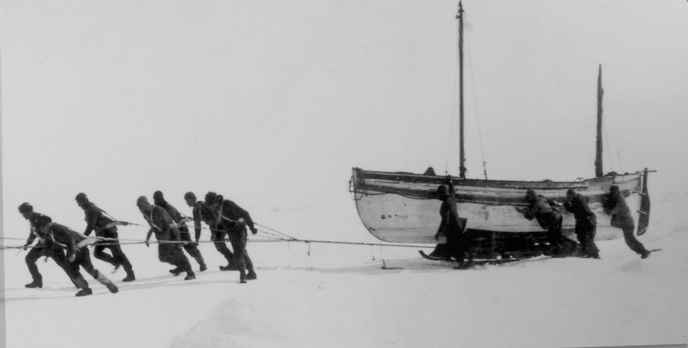
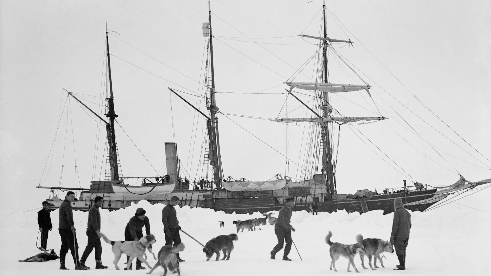
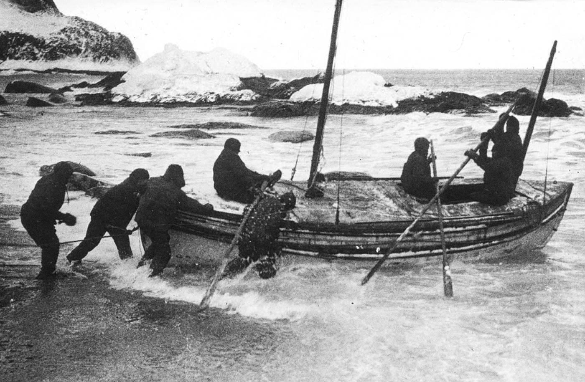

This was going to be my entry for the 2026 ACX book review contest, but I ran out of time and didn't want to rush it.
The 1999 cult classic Boondock Saints has an unforgettable scene about halfway through the movie where the FBI agent (played by Willem Dafoe) hot on the Saints' trail comes across a bullet-riddled crime scene and begins to give a play-by-play reenactment of what happened. (I'll spare the intermediate details, but it involves a stun gun, a whole lotta bodies dropping, and some badass shooting.) The real magic is in Dafoe's final monologue, where he (incorrectly) relives what the Saints were met with when leaving:
They exited out the front door. They had no idea what they were in for. Now they're staring at six men with guns drawn. It was a fucking ambush. This was a fucking bomb dropping on Beaver Cleaverville. For a few seconds, this place was armageddon. There was a firefight! [There then proceeds to be a massive shootout between the Saints and their assailant.]
Dafoe was accurate except for one thing: it wasn't six men, it was one. One guy did what an FBI agent thought six could. One guy almost took out the deadliest vigilantes in Boston and still lived to tell about it.
In the Boondock Explorers, the theoretical Boondock-Saints-knockoff film starring Ernest Shackleton as an Antarctic explorer and Willem Dafoe as an FBI agent hot on his trail for unexplained reasons, Dafoe has a similar explanation after finding the remnants of the Endurance's crew's belongings scattered throughout the ice and the ship itself sunk to the bottom of the Weddell Sea:
They exited out the front gangway. They had no idea what they were in for. Now they're staring at six animals, teeth drawn: a yeti, a leopard seal, a polar bear (how did that get here), an emperor penguin, a killer whale, and an albatross. It was a fucking ambush. This was a fucking bomb dropping on Shacky Shackleville. For a few seconds, this place was armageddon. [There then proceeds to be a massive battle between the Explorers with harpoons and guns and the army of animals.]
Dafoe was still accurate except for one thing: it wasn't animals, it was the ice and wind that together destroyed a well-built ship and drove 28 hardened men to the brink of starvation and death without batting an eye.
The ice was unbreakable, insurmountable, defiant to their attacks and entreaties, mocking them the same way a club bouncer ignores the midget at his waist trying to pull him aside so they can get in:
A full head of steam was raised, all sails set, and the engines put full speed ahead in an attempt to break through to the crack. For three hours the ship leaned against the ice with all her might—and never moved a foot.
And it was endless and expansive, as Lansing put into perspective:
The Endurance was one microcosmic speck, 144 feet long and 25 feet wide, embedded in nearly one million square miles of ice that was slowly being rotated by the irresistible clockwise sweep of the winds and currents of the Weddell Sea.
Imagine it. A vast wasteland of white and cold and pain that does not respond to anything except sun and wind and ocean currents, three things humans have no control over. It doesn't care what happens, it just does. Its scale is magnificent, towering over them in many cases. Lansing makes this—the fact that the crew had zero control over the environment—abundantly clear in his descriptions and recounting of the events.
[add picture of how microcosmic it really was]Other times the ice was kind and forgiving. It acted as a cold, hard barrier between the men and likely death in the water. It served as an large, easy, free-going transport, getting them closer to civilization when the wind and current were in their favor.
Understanding the crew helps to explain just how they were able to survive, and a clear picture is painted early on, letting us know just who the courageous scallywags were who signed up for this harrowing journey. An urban—or some may say, antarctic—legend exists, describing Shackleton's advertisement in looking for men to join him:
Men wanted for hazardous journey. Low wages, bitter cold, long hours of complete darkness. Safe return doubtful. Honour and recognition in event of success.
While this is almost certainly fictitious given the fact the original ad was never found, it might as well have been true given the men (and three girls) who applied. Lansing explains that:
almost without exception, these volunteers were motivated solely by the spirit of adventure, for the salaries offered were little more than token payments for the services expected
But outside of Shackleton's “nucleus of tested veterans”, most of whom had served with Shackleton on previous expeditions, the remaining men weren't really vetted, which is shocking given a) the trip is one of the first of its kind, b) Shackleton cared a lot about the leaders, and c) going to Antarctica is a crazy endeavor, especially in 1914, that requires certain skills and personality to do well at:
In the matter of selecting newcomers, Shackleton’s methods would appear to have been almost capricious. If he liked the look of a man, he was accepted. If he didn’t, the matter was closed. And these decisions were made with lightning speed. There is no record of any interview that Shackleton conducted with a prospective expedition member lasting much more than five minutes.
I'm all for judging books by their covers, but this is perhaps a step too far!
And yet despite this haphazard interview process, (spoiler alert!) they made it home. There's probably something to be learned here, but more on that later.

One of the times I've been closest to a really bad day (outside of driving on one-lane highways at high speeds with no median) was on a single-day hike to King's Peak. My hiking partner got altitude sickness while some nasty thunderclouds were forming above us, putting a rather uncomfortable image in my mind of me having to help a soaking wet, hypoxic, weak person through a slippery, full-exposure rock field while temperatures were in the 50s. No fun and not safe! I assumed command of the hiking group democracy and made the decision to get the fuck out of there ASAP—no stopping, no second-guessing, nothing. There was some power to this that made me feel better and safer; we just committed to what we decided was the best course of action and went for it without a second thought.
Shackleton's orders were followed both because he was the leader and because he was a great leader. Being the leader gives followers a natural person to look to in times of peril or indecision. Being a great leader gives people comfort in the decisions being made. These two combined make for a wonderful combo when stranded in the middle of some of the world's most inhospitable land with no outward communication and limited food.
That's not to say the decisions made were easy. Dogs and even puppies had to be killed:
Tom Crean, tough and practical as ever, took the younger puppies and Mrs. Chippy some distance from camp and shot them without a qualm, but it was Macklin's duty to destroy Sirius, and he could hardly face the task. Reluctantly he got a 12-gauge shotgun from Wild's tent; then he led Sirius off toward a distant pressure ridge. When he found a suitable spot he stopped and stood over the little dog. Sirius was an eager, friendly puppy, and he kept jumping up, wagging his tail and trying to lick Macklin's hand. Macklin kept pushing him away until finally he got up nerve enough to put the shotgun to Sirius' neck. He pulled the trigger, but his hand was shaking so he had to reload and fire a second time to finish the puppy off.

A foot had to be amputated. Food had to be rationed to the point of extreme hunger and made from some not-so-appetizing parts:
For supper that night, Shackleton ordered Green to put some lumps of blubber into the seal meat stew so that the party might get accustomed to eating it. Some of the men, when they saw the rubbery, cod-liver-oil–flavored chunks floating around in their "hoosh," meticulously removed every trace.
But later they weren't so picky:
But the majority were so hungry they were delighted to gobble down every mouthful, blubber included.
Sheer fucking endurance with a lowercase was the name of the game. The Endurance is what took them to Antarctica and endurance is what brought them back home. Unfortunate event after unfortunate event left them in ever-worsening situations: getting the ship stuck in the pressure ridges and being unable to budge; the ship getting crushed and eventually sinking; the ice floes separating without warning; drifting in the wrong direction; making it to islands that were uninhabitable; landing on the wrong side of the final island and having to hike and climb and bushwhack on a path no one had ever before traveled with minimal food and drink available. The hits just kept coming and they just kept taking it on the chin like the badass explorers they were.

With the bravery and resilience came optimism and a sense of happiness, even after their ship had sunk:
Nevertheless, there was a remarkable absence of discouragement. All the men were in a state of dazed fatigue, and nobody paused to reflect on the terrible consequences of losing their ship. Nor were they upset by the fact that they were now camped on a piece of ice perhaps 6 feet thick. It was a haven compared with the nightmare of labor and uncertainty of the last few days on the Endurance. It was quite enough to be alive—and they were merely doing what they had to do to stay that way. There was even a trace of mild exhilaration in their attitude. At least, they had a clear-cut task ahead of them. The nine months of indecision, of speculation about what might happen, of aimless drifting with the pack were over.
A positive mindset was Shackleton's overaching goal on their journey to survive:
Shackleton was concerned. Of all their enemies—the cold, the ice, the sea—he feared none more than demoralization.
Positivity is what laid the foundation for the endurance that ultimately saved their lives. Dissent and dissatisfaction were quickly squashed whenever it reared its ugly head. The crew—and especially Shackleton—recognized the perniciousness of demoralization and banded together when needed to keep spirits high. This was the obviously-correct course of action.
Shackleton, however, was not without his own faults and mistakes, often caused by his excessive hubris and optimism:
Like most of the others, he [Greenstreet, a crew member] considered the laying in of all possible meat the prudent thing to do, as any ordinary individual might. But Shackleton was not an ordinary individual. He was a man who believed completely in his own invincibility, and to whom defeat was a reflection of personal inadequacy. What might have been an act of reasonable caution to the average person was to Shackleton a detestable admission that failure was a possibility.
He tacitly expected those around him to reflect his own extreme optimism, and he could be almost petulant if they failed to do so. Such an attitude, he felt, cast doubt on him and his ability to lead them to safety.